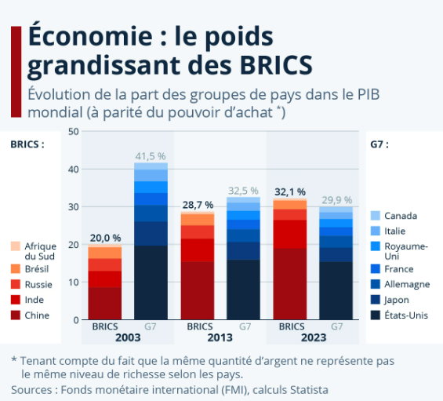

Presentation
Le BRICS+ joue un rôle de plus en plus important dans l’économie mondiale. Ensemble, les pays membres représentent environ 45 % de la population mondiale et près de 30 % du PIB mondial.
Le groupe cherche à renforcer le commerce entre ses membres et à développer des institutions financières indépendantes, telles que la Nouvelle Banque de Développement (NDB), créée en 2014.
- 📈 Création de la Nouvelle Banque de Développement pour financer les projets des pays émergents.
- 💱 Développement des échanges en monnaies locales pour réduire la dépendance au dollar.
- 🌾 Soutien à l’agriculture et à la sécurité alimentaire mondiale.
- 🔋 Coopération dans les domaines de l’énergie et des ressources naturelles.

Grâce à son expansion vers le BRICS+ en 2023, le groupe étend son influence en Afrique, en Asie et au Moyen-Orient, renforçant son poids dans le commerce international.
Avis des internautes
👍 Avis positifs
| Nom | Commentaire |
|---|---|
| Khaled | Le BRICS+ crée un nouvel équilibre économique mondial plus juste. |
| Emma | Une initiative qui offre de nouvelles opportunités aux pays en développement. |
👎 Avis négatifs
| Nom | Commentaire |
|---|---|
| Marc | Les effets économiques restent limités sur le long terme. |
| Yara | Les différences politiques entre membres peuvent freiner la coopération. |